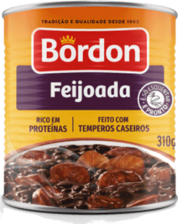
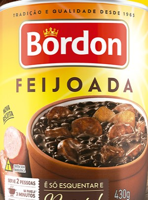
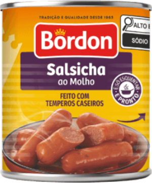
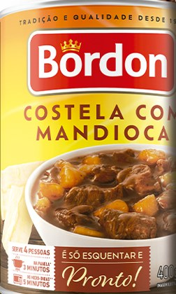
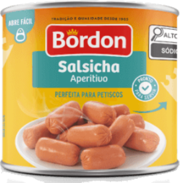
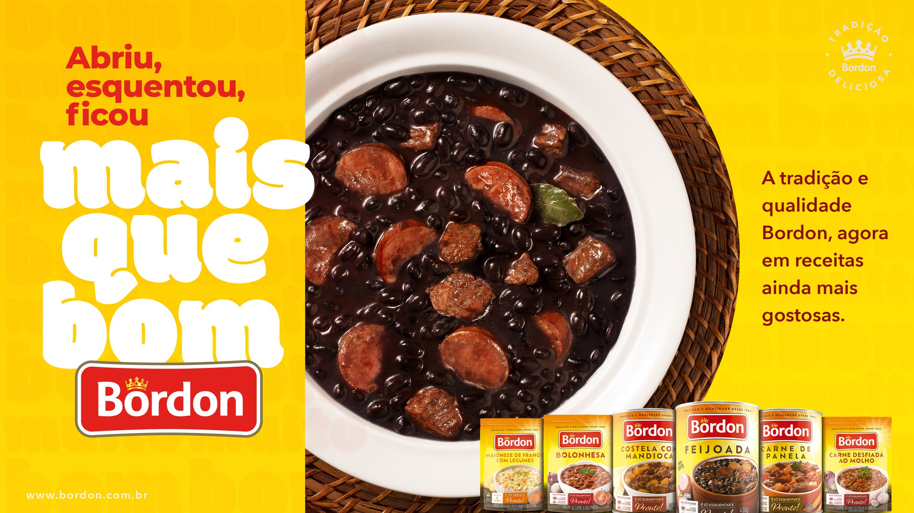
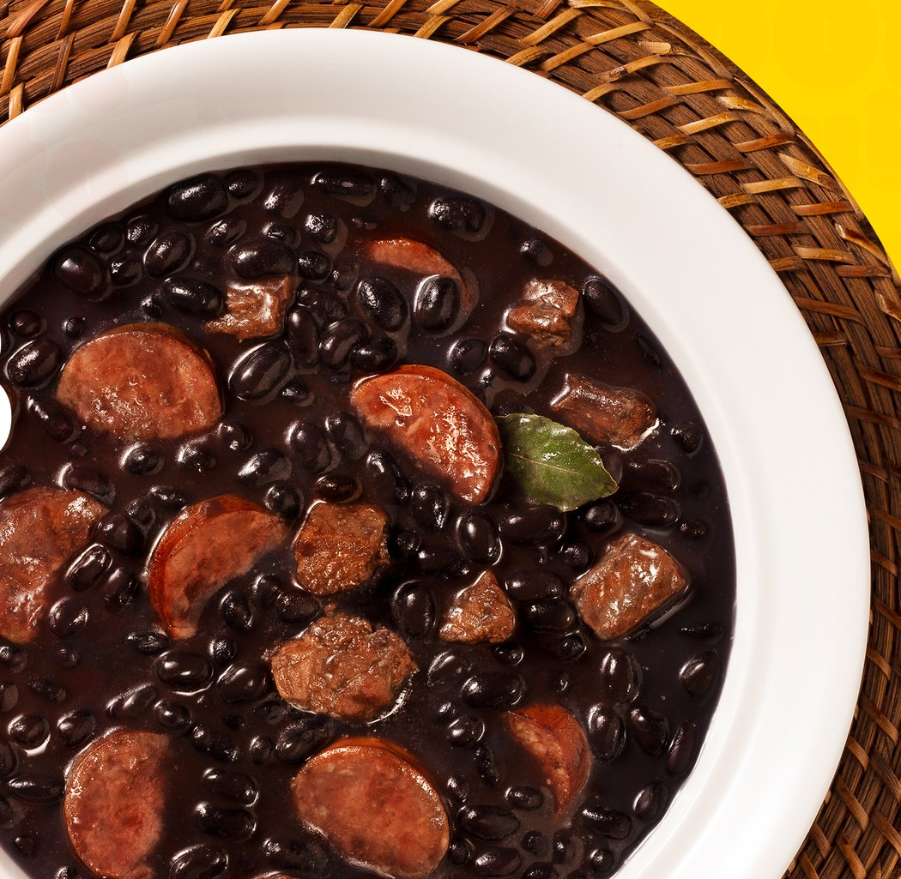

Ponto Pronto Bordon: a lata sai da despensa e vira o jantar de hoje.
×
(00) Quem é a 75 LAB
Nosso propósito
Transformar intenção em realidade no ponto de venda.
A 75 LAB nasceu da soma de dois lados que quase nunca se sentam à mesma mesa: o varejo e a indústria. Por mais de 15 anos vivemos a distância entre a intenção comercial de uma marca e o que de fato acontece na loja. Existimos para fechar essa distância.
IndústriaLançamento, categoria, P&Lo lado de quem vende para o varejo
← valor →
VarejoLayout, execução, aprovaçãoo lado de quem opera a loja
Não somos uma agência tradicional. Somos uma aceleradora de trade.
Modelo tradicional
BriefingRetrabalhoAtrasoVerba evapora
Modelo 75 LAB
IntençãoImersãoSoluçãoExecuçãoResultado
01Vivemos o trade, não só aprendemos
Os sócios vêm do varejo e da indústria: os dois lados do balcão estão na mesma mesa.
02Solução certa, nunca de prateleira
Montamos a estrutura pela demanda de cada cliente, não um pacote pronto.
03Para cada desafio, a equipe certa
Hub de especialistas e fornecedores, com governança ponta a ponta e sem markup oculto.
04Prova acima de promessa
Medimos o que entregamos: peça a peça, loja a loja.
95%projetos aprovados
−25%de custo de produção com o fornecedor certo
15000+PDVs positivados
+15anos no trade, dos dois lados do balcão
Fonte: 75lab.com.br, números da 75 LAB.
×
(00) Quem é a 75 LAB
Números da 75 LAB · 12 meses medidos no nosso sistema
A 75 LAB em números: a operação que já rodamos hoje.
1811entregas concluídas em 12 meses, entre jobs e etapas
513jobs concluídos de ponta a ponta no mesmo período
94clientes com demanda aberta nos últimos 12 meses
122jobs ativos ao mesmo tempo no pico, em 26/10/2026
52clientes atendidos em paralelo nesse mesmo pico
8dias úteisprazo mediano do pedido à entrega em baixa complexidade
41dias úteisprazo mediano em alta complexidade: stands, enxovais e obras
1070h/mêsde trabalho apontadas tarefa a tarefa, de julho a setembro
Dados da própria 75 LAB, não de cliente. Fonte: Ariuno, sistema de gestão da 75 LAB · 28/10/2025 a 27/10/2026 · horas apontadas de jul a set/2026. Baixa complexidade: jobs com até 8 h de trabalho; alta: acima de 16 h.
×
(00) Quem é a 75 LAB
Já trabalhamos a gôndola onde a Bordon vive.
Supermercado, atacarejo e loja de bairro são os canais desta estratégia, e as marcas de alimento que atendemos vivem neles. Isso quer dizer que já conhecemos as regras de cada rede, o espaço que ela libera e o que o promotor consegue executar.
Canal alimentarsupermercado, atacarejo e conveniência
Varejo especializadoloja de categoria, eletro, farma e beleza
Fonte: 75 LAB, carteira de clientes de 2025 e 2026. A referência pode ser pedida a qualquer uma dessas marcas.
×
(00) Resumo executivo
A estratégia em uma tela.
01Para onde vamos
Da despensa para o jantar de hoje
Bordon vista, lembrada, provada e medida em toda loja do plano.
02Por que
A demanda chegou
Cesta +9,1%, refeição em 30 minutos e carne no preço recorde.
03Como
Ponto Pronto Bordon
Uma plataforma, seis frentes, doze meses.
04O que teremos
Execução que se prova
Toda peça com QR, canal inteiro de uma vez, sem piloto.
VistaLembradaProvadaEscolhidaMedida
Fontes: NielsenIQ para ABRAS, semana 44/2026; Kantar, Consumer Insights 2024 (publicado em 17/03/2025); Cepea via Compre Rural, 05/11/2026.
×
(00) Recomendações
Oito decisões para 2027, duas para cada barreira.
Ponto de partidaMarço de 2027: onda 1 em todas as lojas de atacarejo e hiperDepois, supermercados e lojas de bairro, antes do São João.
Barreira 1Ser vista
01Gôndola em bloco amarelo
A marca toda junta, arrumada por momento de consumo.
Lojas P, M e G
026 itens que nunca faltam
Feijoada, salsicha e mais 4 sempre na prateleira.
Meta: falta abaixo de 5%
Barreira 2Ser lembrada
03Lata ao lado do jantar
Perto do arroz, da massa, do pão e do cuscuz.
Supermercados
04Ser achada online
Busca e encarte do varejista nas datas fortes.
Apps e sites
Barreira 3Ser provada
05Degustação no fim de semana
O shopper prova e leva com desconto na hora.
Lojas grandes
06Preço por pessoa
O valor da refeição dividido por quem come.
Prateleira, encarte e app
Barreira 4Ser medida
07QR em toda peça
Cada peça prova onde foi instalada e se continua lá.
Todas as lojas
08Nota da loja perfeita
Nota de 0 a 100 por loja, com prêmio para quem evolui.
Leitura todo mês
Em outras palavras: começamos pelo atacarejo e pelo hiper, e cada decisão tira um motivo para o shopper não levar a Bordon.
×
Capítulo 01 de 04
01
×
Para onde vamos
A ambição e o que precisa mudar na loja até o fim de 2027.
01Para onde vamos
02Por que
03Como
04O que teremos
×
(01) Para onde vamos
De estoque da despensa a jantar de hoje.
Hoje, na maior parte das lojasFim de 2027, nas lojas do plano
Ser vista
Prateleira baixa, misturada a outras conservas.
Bloco amarelo na altura dos olhos e ponto extra.
Ser lembrada
Só na emergência.
No jantar, no lanche e no petisco.
Ser provada
Dúvida sobre o sabor; escolha pelo menor preço.
Provada na loja, escolhida pelo preço por pessoa.
Ser medida
Ação de loja sem prova.
Cada peça com QR, lida todo mês.
Em outras palavras: hoje a lata é comprada quando falta comida em casa. Queremos que ela seja escolhida para o jantar, de propósito.
×
Capítulo 02 de 04
02
×
Por que
Mercado, shopper e as barreiras da lata, com dado e com teoria.
01Para onde vamos
02Por que
03Como
04O que teremos
×
(02) Mercado
Pouco tempo, pouco dinheiro, carne cara.
Tempo
66%
das refeições em casa ficam prontas em até 30 minutos.
Fora de casa
R$35,40
o almoço fora de casa, +22,1% em um ano.
1º tri 2024
1º tri 2025
Orçamento
70%
dos lares com o orçamento apertado.
Carne fresca
+17,75%
no boi gordo em 12 meses, recorde desde 1994.
out/2025
out/2026
O que vemos
Comer em casa, rápido e barato, sem largar a carne bovina.
O que significa
Carne de verdade pronta em minutos é a resposta.
Por isso
A gôndola vende jantar resolvido e preço por pessoa.
Fontes: Kantar, Consumer Insights 2024, publicado em 17/03/2025 (66%); Kantar, 08/07/2025 (almoço fora, 1º tri 2025); Worldpanel by Numerator via Mercado&Consumo, 17/09/2026 (orçamento e promoção); Cepea via Compre Rural, 05/11/2026 (boi gordo, out/2026); Worldpanel via Mercado&Consumo, 29/08/2026 (carne bovina em 33,7% das ocasiões).
×
(02) Pesquisa de mercado
Vai menos ao mercado, leva mais e caça oferta.
Ida ao mercado × volume por compra
1002024
81frequência 2026
123volume por ida 2026
Índice, base 2º tri 2024 = 100.
+35%
em valor nas compras feitas em promoção.
+10%
na marca própria: o preço virou critério.
49,2%
do consumo de mercearia vem da classe C, contra 47,4% antes.
45,4%
dos lares compraram online em 2025, contra 23,8% em 2023.
Para a Bordon: preço por pessoa e caixa para quem estoca, e presença online para quem pede pelo app.
Fontes: Worldpanel by Numerator, Consumer Insights 2026, via Mercado&Consumo, 17/09/2026 (frequência, volume, promoção, marca própria e classe C, 2º tri 2026); Worldpanel by Numerator, Brand Footprint 2026, via Central do Varejo (e-commerce 2023 a 2025).
×
(02) Insight do consumidor
“
Eu quero carne de verdade no jantar, mas não tenho tempo nem dinheiro para fazer do zero.
Ele quer
Comida caseira, com carne, para a família.
Mas
Pouco tempo, carne cara e dúvida sobre a lata.
A Bordon resolve
Carne pronta em 3 minutos, preço por pessoa e prova no prato.
O trabalho que ele contrata: resolver o jantar de hoje sem culpa.
Insight da 75 LAB a partir de Kantar (refeições em até 30 minutos), Worldpanel (orçamento e promoção) e Cepea (preço do boi). Base: jobs to be done, Christensen, Hall, Dillon e Duncan, Competing Against Luck, HarperBusiness, 2016.
×
(02) Shopper
A lata se decide na frente da gôndola.
76%
das compras em hiper e supermercado são decididas no ponto de venda.
20 a 30% do tempo na loja é escolhendo.
Sistema 1: reconhecer rápido vence comparar.
4 missões, cada uma com uma loja diferente.
As missões e o lugar da Bordon em cada umaClique em cada missão
O que ele busca
Encher a despensa pagando menos por unidade.
Onde
Atacarejo e hiper
O que a loja precisa ter
Caixa fechada, capa de palete e preço por caixa.

O que ele busca
Resolver as refeições da semana.
Onde
Supermercado
O que a loja precisa ter
Marca fácil de achar e lata ao lado do arroz e das massas.


O que ele busca
O jantar de hoje, agora.
Onde
Bairro, conveniência e aplicativos
O que a loja precisa ter
Os 6 mais vendidos sempre na prateleira.

O que ele busca
Compra pequena, perto de casa, por impulso.
Onde
Mercado de bairro e caixa
O que a loja precisa ter
Petisco e lanche prontos perto do caixa.

Em outras palavras: o shopper não para para comparar: leva o que vê e reconhece rápido. Por isso é na loja que a Bordon ganha ou perde a venda.
Fontes: POPAI Brasil, estudo em hiper e supermercados, via Giro News, 06/10/2010 (76%); Sorensen, Inside the Mind of the Shopper, 2009, e Knowledge@Wharton, 2006 (20 a 30%); Kahneman, Thinking, Fast and Slow, 2011; Kantar, Canais de varejo, 19/02/2024 (missões, jan a set 2023 contra 2022).
×
(02) O desafio
Não falta lata. Falta ser vista, lembrada, provada.
Parecevender mais lata Éentrar na decisão do jantar
Barreira 1
Ser vista
10,8% de falta na prateleira. Quando falta, 26% trocam de marca.
312619159
outra lojaoutra marcaoutro itemadiadesiste
TeoriaMarca que cresce é fácil de achar (Sharp, 2010).
RespostaLinha certa por loja, bloco amarelo e ponto extra.
Barreira 2
Ser lembrada
+9% de venda com produtos que se completam lado a lado.
TeoriaMais momentos ligados à marca, mais lembrança (Romaniuk, 2023).
RespostaLata ligada ao jantar, ao lanche e ao petisco.
Barreira 3
Ser provada
Semanas de efeito da degustação; a ponta de gôndola cai em 2.
TeoriaProvar tira o medo do sabor.
RespostaDegustação no fim de semana e preço por pessoa.
Na mesma prateleiraMarca própria cresce 10%: sem argumento de valor, a escolha vira centavo.
Em outras palavras: para vender mais, a lata precisa estar na prateleira, ser lembrada na hora do jantar e ter o sabor provado.
Fontes: Neogrid via Giro News, ruptura de jul/2026; Helm e Hegenbart, Univ. Regensburg, 2011, a partir de Gruen, Corsten e Bharadwaj, GMA, 2002; Bezawada et al., Journal of Marketing, 2009; Romaniuk, Better Brand Health, OUP, 2023; Sharp, How Brands Grow, OUP, 2010; Chandukala, Dotson e Liu, Journal of Retailing, 2017; Worldpanel via Mercado&Consumo, 17/09/2026.
×
(02) Base teórica
Nove teorias de marketing e trade por trás de cada escolha.
Clique em cada teoria
Byron Sharp · How Brands Grow, Oxford University Press, 2010
Marca cresce quando é fácil de achar e fácil de lembrar.
O que diz: o shopper não procura muito. Ele compra a marca que está na frente dele (disponibilidade física) e a que vem à cabeça na hora (disponibilidade mental).
Como aplicamos na Bordon: os 6 itens que nunca faltam, o bloco amarelo e o ponto extra resolvem o "achar"; o amarelo, a coroa e os selos repetidos resolvem o "lembrar".
Nas telas: canais, gôndola, loja perfeita
Romaniuk e Sharp · How Brands Grow Part 2, Oxford University Press, 2015 · a partir da lei do duplo risco de Ehrenberg
Quem cresce conquista mais compradores, não compradores mais fiéis.
O que diz: marcas grandes têm muito mais compradores e só um pouco mais de lealdade. Crescer é trazer quem compra pouco ou nunca comprou.
Como aplicamos na Bordon: a degustação e a lata ao lado do arroz e da massa existem para trazer quem ainda não compra comida pronta em lata.
Nas telas: ativação, peças, cross
Jenni Romaniuk · Better Brand Health, Oxford University Press, 2023
Toda compra começa numa situação do dia.
O que diz: o shopper não pensa "vou comprar enlatado", pensa "o que faço para o jantar?". Quanto mais situações a marca estiver ligada, mais ela é lembrada.
Como aplicamos na Bordon: ligamos a lata a quatro momentos: jantar rápido, lanche, petisco e sábado de feijoada. A gôndola é organizada por esses momentos.
Nas telas: gôndola, calendário, pilares
Jenni Romaniuk · Building Distinctive Brand Assets, Oxford University Press, 2018
Cor e símbolo fazem a marca ser reconhecida sem ler.
O que diz: ativos distintivos são cores, formas e símbolos que o shopper liga a uma marca só. Usados sempre iguais, encurtam a decisão.
Como aplicamos na Bordon: o amarelo, a coroa e os dois selos de preparo aparecem em todas as peças, e a faixa da gôndola usa a cor de cada produto do manual.
Nas telas: plataforma, gôndola, peças
ECR e The Partnering Group · Category Management Report, 1995
Cada categoria tem um papel na loja.
O que diz: o varejo trata a categoria como um negócio, com papel definido: destino, rotina, sazonal ou conveniência. O espaço e a promoção seguem esse papel.
Como aplicamos na Bordon: conservas clássicas são rotina, pratos prontos são conveniência e feijoada no inverno é sazonal. O planograma P, M e G nasce disso.
Nas telas: papel da categoria, gôndola
Kantar · Canais de varejo, 2024
Cada ida ao mercado tem uma missão.
O que diz: o shopper vai à loja para abastecer, repor, resolver uma urgência ou comprar perto de casa. Cada missão pede uma loja diferente.
Como aplicamos na Bordon: caixa e preço por caixa no atacarejo, linha completa no hiper, os 6 mais vendidos na loja de bairro.
Nas telas: shopper, canais
Daniel Kahneman · Thinking, Fast and Slow, 2011 · Herb Sorensen · Inside the Mind of the Shopper, 2009
Na gôndola decide o pensamento rápido.
O que diz: o cérebro tem um modo rápido e automático e outro lento e racional. Na loja, só 20 a 30% do tempo é escolhendo: vence quem é reconhecido em segundos.
Como aplicamos na Bordon: cada peça tem uma mensagem só, o selo de preparo fica à vista e o preço vem por pessoa, fácil de entender.
Nas telas: shopper, peças
Clayton Christensen e outros · Competing Against Luck, HarperBusiness, 2016
O cliente contrata o produto para resolver um problema.
O que diz: ninguém compra uma lata, compra um progresso numa situação. Entender esse trabalho mostra contra quem a marca realmente compete.
Como aplicamos na Bordon: o trabalho é "resolver o jantar de hoje sem culpa". A Bordon compete com o delivery e com a marmita, não só com a lata do lado.
Nas telas: insight do consumidor, plataforma
Tversky e Kahneman · Science, 1974 · Anderson e Simester · Marketing Science, 2001
O primeiro preço que o shopper vê vira a régua.
O que diz: a primeira referência de preço muda o julgamento do que vem depois. E ofertas demais na mesma categoria tiram a força de cada uma; o estudo foi feito com atum enlatado.
Como aplicamos na Bordon: o preço por pessoa troca a régua do centavo pela refeição, e usamos no máximo 1 oferta a cada 4 itens.
Nas telas: ativação, loja perfeita
Fontes: Sharp, OUP, 2010; Romaniuk e Sharp, OUP, 2015; Romaniuk, OUP, 2018 e 2023; ECR e The Partnering Group, 1995; Kantar, 19/02/2024; Kahneman, FSG, 2011; Sorensen, FT Press, 2009; Christensen, Hall, Dillon e Duncan, HarperBusiness, 2016; Tversky e Kahneman, Science, 1974; Anderson e Simester, Marketing Science, 2001.
×
(02) Onde crescer
Crescer com o que a Bordon já tem.
A matriz de Ansoff mostra quatro caminhos para crescer. Os dois de menor risco usam produtos e lojas que a Bordon já tem; é neles que esta estratégia aposta.
MercadosProdutosatuaisnovosatuaisnovos
PenetraçãoMais lojas e mais compradores para as conservas clássicas.Foco 1
Novos produtosPratos prontos para quem já compra Bordon.Foco 2
Novos mercadosDigital e cestas de empresa, com a linha atual.Apoio
DiversificaçãoFora do escopo: maior risco.
O papel de cada linha na loja
RotinaConservas clássicas: carne em conserva, salsicha, feijões
Tem de estar sempre na prateleira, com preço justo. Giro e presença.
ConveniênciaPratos prontos: feijoada, carne de panela, costela
Resolve o jantar e completa a cesta, com mais valor por unidade.
SazonalFeijoada e caldos no inverno e no São João
Ganha ponto extra e degustação nas datas fortes.
Em outras palavras: não precisamos inventar produto nem loja. Precisamos vender mais do que já existe, para mais gente.
Fontes: Ansoff, Strategies for Diversification, Harvard Business Review, 1957; papéis de categoria: ECR e The Partnering Group, Category Management Report, 1995, e Briesch, Dillon e Fox, Marketing Science, 2013.
×
Capítulo 03 de 04
03
×
Como
A plataforma Ponto Pronto, canais, gôndola, peças, ativação e calendário.
01Para onde vamos
02Por que
03Como
04O que teremos
×
(03) Mapa da estratégia
A estratégia inteira em um mapa.
Clique em cada barreira
Ambição
Da despensa ao jantar de hojeBordon em toda loja do plano até dez/2027
Barreiras
Frentes
Canais
Gôndola
Peças
Ativação
Promoção e preço
Digital e encarte
Execução
Ações-chave
Onda 1 no atacarejo e hiper
Bloco amarelo P, M e G
6 itens que nunca faltam
Lata ao lado do arroz e da massa
Busca e encarte nas datas
Degustação no fim de semana
Preço por pessoa
QR em toda peça
Loja perfeita e desafio
Indicadores
Lojas com a linha certa
Falta abaixo de 5%
Ponto extra comprovado
Venda com e sem ponto extra
Provas e vendas na degustação
Nota da loja acima de 80
Ser vista: canal, gôndola e peças garantem a linha certa, sem falta e com ponto extra.
Ser lembrada: a lata ao lado do jantar, na busca e no encarte das datas fortes.
Ser provada: degustação e preço por pessoa tiram o medo do sabor e do preço.
Ser medida: QR em toda peça e a nota da loja perfeita, lidos todo mês.
×
(03) A plataforma
Ponto Pronto: em toda loja, o jantar pronto.

1234
1A promessaPreparo e resultado numa frase, lida em dois segundos.
2O prato heróiA feijoada: todos conhecem, poucos querem fazer.
3Tradição desde 1965Coroa e amarelo viram atalho de reconhecimento.
4A linha inteiraSeis receitas: opção para a semana toda.
Os dois selos da lata assinam todas as peças.
Em outras palavras: o Ponto Pronto é um lugar fixo na loja, sempre com a mesma cara, onde o shopper encontra o jantar pronto da Bordon.
Fonte: Bordon, key visual Mais que bom e Manual de Identidade Visual (selos e paleta); embalagens com "Tradição e qualidade desde 1965".
×
(03) Pilares
Três ideias para dizer, seis frentes para fazer.
Marketing o que dizemos
Jantar resolvido
Lata ligada ao jantar, ao lanche e ao petisco.
Ativos que já são da marca
Amarelo, coroa e selos, sempre iguais.
Comida de verdade
Carne bovina pronta, provada no prato.
Trade onde e como
01
Canais
Um papel para cada canal, começando pelo atacarejo.
Base: missões de compra, Kantar 2024
02
Gôndola
Linha por tamanho de loja, bloco por ocasião.
Base: gerenciamento por categoria, ECR 1995
03
Peças
Dez peças em três conjuntos, com QR.
Base: display com +19% no alimentar, POPAI 2014
04
Ativação
Degustação nos fins de semana.
Base: Chandukala et al., 2017
05
Promoção e preço
Preço por pessoa e pouca oferta por vez.
Base: Anderson e Simester, 2001
06
Digital e encarte
Ser achada antes da loja.
Base: e-commerce em 45,4% dos lares, 2025
Em outras palavras: o marketing diz o que a Bordon promete; o trade garante que essa promessa esteja na loja, todo dia.
Fontes: Kantar, 19/02/2024; ECR Best Practices e The Partnering Group, Category Management Report, 1995; POPAI e Quri, Compliance Initiative, 2014, via Retail Environments, jul/ago 2015; Chandukala, Dotson e Liu, Journal of Retailing, 2017; Anderson e Simester, Marketing Science, 2001; Worldpanel by Numerator, Brand Footprint 2026.
×
(03) Canais
Cada canal com um papel e um kit.
Clique em cada canal
76%
dos lares compram no atacarejo. No Nordeste, 70% do valor.
2022 · 69%2023 · 72%2024 · 74%2025 · 76%
Papel
Volume e Nordeste.
Missão
Encher a despensa.
Itens
Mais vendidos em caixa e feijoada de 830 g.
Peças
Capa de palete, ponta de gôndola, faixa.
Mecânica
Preço por caixa.
17
itens: a linha inteira e espaço para provar.
Papel
Vitrine e degustação.
Missão
Refeições da semana.
Itens
Linha completa, prontos na altura dos olhos.
Peças
Ilha, lata gigante, degustação, clip strip.
Mecânica
Combo jantar com arroz ou massa.
6
itens que não podem faltar.
Papel
Presença perto de casa.
Missão
Jantar de hoje.
Itens
Feijoada, carne de panela, salsicha, salsicha ao molho, almôndegas, carne em conserva.
Peças
Display de caixa, wobbler, stopper.
Mecânica
Caixa mista pelo distribuidor, com as peças.
45,4%
dos lares compram online, contra 31,1% em 2024.
Papel
Ser achada na busca.
Missão
Urgência e recompra.
Itens
Prontos e salsichas.
Peças
Página com foto do prato e preparo.
Mecânica
Busca paga por feijoada, comida pronta e salsicha.
Set a dez
é quando empresas fecham cestas.
Papel
Volume e marca dentro de casa.
Missão
Preço e validade longa.
Itens
Carne bovina em conserva, salsicha, feijoada e almôndegas.
Peças
Catálogo e cartão de receita na cesta.
Mecânica
Condição por volume a partir de setembro.
Em outras palavras: cada tipo de loja tem um jeito de comprar, então cada uma recebe um kit e uma oferta diferentes.
Fontes: NielsenIQ para ABAAS, mar/2026 (penetração do atacarejo em 2025 e participação regional, acumulado de 2026); Worldpanel by Numerator, Brand Footprint 2026, via Central do Varejo (e-commerce); Kantar, 19/02/2024 (missões).
Olhos para o jantarPratos prontos na altura dos olhos.
Mãos nos mais vendidosSalsichas e almôndegas ao alcance da mão.
Bloco verticalA marca toda junta, do topo à base.
Faixa com a cor do produtoO shopper acha pela cor antes de ler.
Nunca faltaFeijoada e salsicha com 4 frentes ou mais.
Preço por pessoaO valor da refeição dividido por quem come.
Base: gerenciamento por categoria (ECR e The Partnering Group, 1995) e ativos distintivos de marca (Romaniuk, Building Distinctive Brand Assets, OUP, 2018). Gôndola em módulos de 1 m e prateleiras a cada 22 cm, desenhada em escala dentro de cada tamanho de loja; medidas de embalagem de referência, conferidas na visita às lojas.
×
(03) Sistema de peças
Três conjuntos, um caminho até o carrinho.
Entrada e área promocional
Pesadas
Atraem de longe e fazem provar
Peças
Ilha, capa de palete, degustação
Canal
Hiper e atacarejo
Resolve
Ser vista e provada
Resultado
Mais gente prova e leva
Corredor e categorias vizinhas
Médias
Explicam a ocasião onde ela nasce
Peças
Lata gigante, clip strip, display de caixa
Canal
Super, bairro e caixa
Resolve
Ser lembrada
Resultado
A lata entra no jantar
Gôndola da categoria
Leves
Convertem na hora de pegar
Peças
Testeira, faixa, wobbler, stopper, preço
Canal
Todos
Resolve
Ser escolhida
Resultado
Decisão em segundos
Resultado esperadoMais lojas com a linha, mais gente provando, mais venda por loja.
Em outras palavras: as peças grandes chamam de longe, as médias explicam no corredor e as pequenas ajudam a decidir na prateleira.
Base: How Brands Grow (Sharp, 2010), disponibilidade física e mental; jornada do shopper em longa, média e curta distância.
×
(03) As peças
Dez peças, um só Ponto Pronto.
Clique em cada peça para ampliar a arte
Pesadas atraem e fazem provar
Médias explicam a ocasião
Leves convertem na prateleira
Ponto Pronto
Resolve: ser vista
Ilha Ponto Pronto
Hiper e super · 120 x 80 cm
Leve a caixa
Resolve: ser vista
Capa de palete
Atacarejo · 4 faces

Esquentou, provou.
Resolve: ser provada
Balcão de degustação
Fim de semana · 90 x 50 cm
Resolve: ser lembrada
Display lata gigante
Super · Ø 60 x 160 cm
Molho pronto com carne
Resolve: ser lembrada
Clip strip ao lado
Massas, arroz e pães · 6 x 70 cm
Petisco pronto
Resolve: ser lembrada
Display de caixa
Bairro e caixa · 30 x 35 cm
Jantar pronto
Resolve: ser vista
Testeira e faixa por cor
Todos · 100 x 30 e 100 x 4 cm
Resolve: ser escolhida
Wobbler com selo
Todos · Ø 12 cm
3 minna panela e pronto
Resolve: ser escolhida
Stopper 3 minutos
Todos · 30 x 12 cm
Serve 2 pessoasJantar para doispreço por pessoa em destaque
Resolve: ser escolhida
Preço por porção
Todos · régua de 4 cm
Materiais de baixo custo e arte trocável sem ferramenta: PS, polionda e papelão. Medidas de referência, confirmadas no projeto executivo de cada peça.
×
(03) Ativação
Provar, levar e voltar a comprar.
Clique em cada frente
"Esquentou, provou."
Formato
Balcão com promotor: feijoada e carne de panela.
Quando
Sexta e sábado nas lojas grandes; mais no inverno.
Conversão
Provou, ganhou desconto na hora.
Por quê
Traz gente nova e o efeito dura semanas.
Combo jantar
Lata com arroz ou massa, preço de refeição.
Leve mais, pague menos
Preço por caixa no atacarejo.
Compre e ganhe
Brinde de cozinha nas datas fortes.
Kit cachorro-quente
Salsicha, pão e batata palha.
Preço por pessoa
A referência deixa de ser o centavo.
Oferta com medida
No máximo 1 oferta a cada 4 itens.
Arroz, farofa e couveclip strip no corredor do arroz
Massasclip strip "molho pronto com carne"
Pão e batata palhakit cachorro-quente na padaria
Cuscuz e tapiocano Nordeste, ao lado do flocão
Bebidasdisplay de balcão do petisco
Pães e torradaslanche pronto na padaria
Encarte do varejista
Selo de preparo e preço por pessoa em todo anúncio.
Quarta e sábado de feijoada
Lembrete fixo no encarte e no app.
Busca paga
Feijoada, comida pronta e salsicha nos apps.
Página de produto
Foto do prato, preparo e porções.
QR com receitas
Receitas de 5 minutos; o QR também prova a instalação.
Mídia perto da loja
Anúncio no celular de quem está perto da degustação.
Em outras palavras: primeiro o shopper prova, depois leva com desconto e volta a comprar porque acha a lata fácil na próxima vez.
Fontes: Chandukala, Dotson e Liu, Journal of Retailing, 2017 (degustação); Anderson e Simester, Marketing Science, 2001 (ofertas na categoria de atum enlatado); Tversky e Kahneman, Science, 1974 (ancoragem); Bezawada et al., Journal of Marketing, 2009 (cross).
×
(03) Calendário
Doze meses, três picos de força.
Clique em cada mês
manutençãoativaçãopico: ponto extra, degustação e encarte
Jan · 2027
Férias: jantar sem fogão quente
Férias escolares
Produtos em foco
Salsicha, maionese de frango, carne desfiada
Na loja
Kit cachorro-quente e lanche pronto na padaria
Canal em destaque
Super e vizinhança
Fev · 2027
Carnaval: petisco pronto
Carnaval, 09/02
Produtos em foco
Salsicha aperitivo, salsicha ao molho
Na loja
Display de balcão Petisco junto das bebidas
Canal em destaque
Vizinhança e atacarejo
Mar · 2027
Onda 1 no atacarejo e no hiper
Consumidor, 15/03 · Páscoa, 28/03
Produtos em foco
Linha completa
Na loja
Capa de palete, ilha Ponto Pronto e lançamento da degustação
Canal em destaque
Atacarejo e hiper
Abr · 2027
Volta à rotina: jantar em 3 minutos
Retomada da rotina
Produtos em foco
Carne de panela, bolonhesa, almôndegas
Na loja
Clip strip no corredor de massas e arroz
Canal em destaque
Supermercado
Mai · 2027
Onda 2 e Dia das Mães
Dia das Mães, 09/05
Produtos em foco
Pratos prontos
Na loja
Onda 2 em super e vizinhança; combo jantar "folga da cozinha"
Canal em destaque
Super e vizinhança
Jun · 2027
Inverno e São João
Namorados, 12/06 · São João, 24/06
Produtos em foco
Feijoada, costela com mandioca, carne desfiada
Na loja
Degustação reforçada e cross com cuscuz no Nordeste
Canal em destaque
Atacarejo e Nordeste
Jul · 2027
Férias de inverno: caldos e feijoada
Férias escolares
Produtos em foco
Feijoada, carne em cubos, salsicha
Na loja
Sábado de feijoada no encarte e no app
Canal em destaque
Hiper e digital
Ago · 2027
Dia dos Pais: sábado de feijoada
Dia dos Pais, 08/08
Produtos em foco
Feijoada, costela com mandioca
Na loja
Ilha com feijoada e combo com farofa e couve
Canal em destaque
Hiper e super
Set · 2027
Cestas e Dia do Cliente
Dia do Cliente, 15/09
Produtos em foco
Carne em conserva, salsicha, feijoada
Na loja
Catálogo para montadoras de cestas; leitura do 1º semestre
Canal em destaque
Cestas e atacarejo
Out · 2027
Dia das Crianças: lanche pronto
Dia das Crianças, 12/10
Produtos em foco
Salsicha, maionese de frango
Na loja
Kit cachorro-quente; ajuste das peças pela leitura
Canal em destaque
Super e digital
Nov · 2027
Black Friday: abastecer a despensa
Black Friday, 26/11
Produtos em foco
Itens de giro em caixa
Na loja
Leve mais, pague menos e preço por caixa
Canal em destaque
Atacarejo e digital
Dez · 2027
Fim de ano: ceia e dias seguintes
Natal, 25/12
Produtos em foco
Fiambre, salsicha aperitivo, feijoada
Na loja
Petisco pronto na ceia e cestas de Natal
Canal em destaque
Todos os canais
Em outras palavras: a força da Bordon se concentra quando o shopper mais precisa: no lançamento, no inverno e no São João, e na Black Friday.
Datas de 2027: Carnaval, Páscoa, Dia das Mães, Dia dos Pais e Black Friday calculados pelas regras de cada data; demais datas fixas. Picos em março (onda 1), maio e junho (onda 2, inverno e São João) e novembro (Black Friday).
×
(03) Execução
A loja perfeita em cinco checagens.
1
Linha certa
Os itens do tamanho da loja, com preço.
25
2
Nada em falta
Feijoada e salsicha sempre na prateleira.
25
3
Bloco amarelo
Marca junta, por ocasião, faixa por cor.
20
4
Ponto extra de pé
Ilha, palete ou display montado e com QR.
20
5
Preço por pessoa
Porta-preço e oferta certos.
10
Nota da loja
Meta: 80 pontos em toda loja do plano.
100
Promotor e repositor
Manual de bolso
Planograma com foto, montagem sem ferramenta e foto pelo QR.
Vendedor e distribuidor
Argumento por canal
Uma página por canal, feita para virar pedido.
Incentivo
Desafio Ponto Pronto
Ranking trimestral por nota da loja e ponto extra comprovado.
Em outras palavras: toda loja recebe uma nota de 0 a 100, e o time é premiado quando a nota sobe.
Pesos de referência da 75 LAB para a nota da loja, a ajustar com o time comercial da Bordon. Base: disponibilidade física (Sharp, How Brands Grow, OUP, 2010).
×
Capítulo 04 de 04
04
×
O que teremos
Medição, cronograma, resultados esperados e próximo passo.
01Para onde vamos
02Por que
03Como
04O que teremos
×
(04) Como medimos
Cada peça prova que está na loja.
Peça na lojaQR e tagEnvioPlataformaDadosLeituraDecisão
One Shot
Instalação comprovada
O que é
Registro da instalação pelo QR da peça.
Como funciona
Escaneia e fotografa; grava loja, data, hora e GPS.
Benefício
Sabe o que foi instalado e cobra o que faltou.
On Timing
Ao vivo, toda semana
O que é
Acompanhamento das peças grandes na loja.
Como funciona
Uma tag de localização avisa o painel se a peça saiu do lugar.
Benefício
Nada some sem aviso; a verba vai para onde vende.
Em outras palavras: cada peça tem um QR que comprova onde foi instalada e se continua no lugar, sem precisar mandar alguém conferir.
×
(04) Cronograma de execução
Do sim à loja em 14 semanas.
Onda 1 em março, onda 2 antes do São João, leitura todo mês.
dez26jan27fevmarabrmaijunjulagosetoutnovdez27
Aprovação e visita às lojas75 LAB e Bordon
KV, desdobramento e executivo75 LAB
Produção das peças com QR75 LAB
Manual e treino de promotores75 LAB e promotoria
Onda 1 instalada: atacarejo e hiper75 LAB e trade
Onda 2: super e bairro75 LAB e distribuidor
Degustação nos fins de semanaPromotoria
Encarte, busca e app nas datasTrade e marketing
Cestas de fim de anoComercial
Leitura mensal e ajuste trimestral75 LAB
Marcos
Sim da BordonOnda 1Onda 2São JoãoLeitura do semestreBlack Friday
Considerando aprovação no início de dezembro de 2026. Produção de referência da 75 LAB: peças pesadas em até 30 dias úteis, leves em 10. Cada coluna é uma quinzena.
×
(04) Papéis e responsabilidades
Quem faz o quê.
RfazAaprovaCé consultadoIé informadoClique em cada papel
Estratégia, calendário e KV
A
C
I
I
I
R
Peças: executivo e produção
A
C
I
I
I
R
Espaço, ponto extra e encarte
C
R·A
C
C
I
C
Instalação das peças
I
A
I
C
C
R
Pedido e abastecimento
I
A
R
C
C
I
Reposição e loja perfeita
I
A
I
C
R
C
Degustação
A
C
I
C
R
C
Busca, encarte e app
A
R
I
C
I
C
Leitura mensal e ajuste
A
C
I
I
I
R
Marketing Bordon: Aprova estratégia, KV, peças e mídia; dono da leitura mensal.
Trade e comercial Bordon: Negocia espaço, ponto extra e encarte; responde pela loja perfeita.
Distribuidor: Abastece os 6 itens que não podem faltar e leva o kit às lojas de bairro.
Varejista: Libera o espaço, o ponto extra e as datas de encarte e de degustação.
Promotoria: Repõe, mantém o bloco amarelo, faz a degustação e lê o QR.
75 LAB: Cria, faz o executivo, produz, instala, treina e mede de ponta a ponta.
Em outras palavras: cada atividade tem um dono que faz e um que aprova, para nada ficar no meio do caminho.
Matriz RACI proposta pela 75 LAB, a validar com os times de marketing, trade e comercial da Bordon.
×
(04) Resultados esperados
O que vamos acompanhar todo mês.
Meta propostaReferência de mercado
Mais vendidos na lojaem 100% das lojas do plano
Falta na prateleiraabaixo de 5%mercado: 10,8%
Ponto extra comprovado1 por loja do plano, com QRdisplay: +19% no alimentar
Venda com e sem ponto extralojas do plano contra as demais
Provas e vendas na degustaçãolidas ação por ação
Frentes da Bordon na gôndolaproporcionais à venda de cada item
Referência não é garantia: resultado real só depois da leitura.
Ponto Pronto
Shopperjantar resolvido em minutos
Marcalembrada fora da despensa
Varejogiro e tíquete na cesta que mais cresce
Comercialargumento por canal para o time
Operaçãopeças leves e sem ferramenta
Dadosloja a loja, todo mês
Fontes: Neogrid via Giro News, ruptura de jul/2026; POPAI e Quri, Compliance Initiative, 2014, via Retail Environments, jul/ago 2015 (lift atribuído ao display no canal alimentar, Estados Unidos).
Caique Becker, cofundador e Head de Trade · caique.becker@75lab.com.br Daniel Coimbra, cofundador e CEO · daniel.coimbra@75lab.com.br contato@75lab.com.br · 75lab.com.br · @setecincolab · (11) 98676-5634
75 LAB Estratégia, Design e Produção Ltda · CNPJ 55.470.982/0001-77 CENU, Centro Empresarial das Nações Unidas, Torre Norte · Av. das Nações Unidas, 12.901, Brooklin, São Paulo, SP, CEP 04578-910

 ← valor →
← valor →


 Petisco
Petisco